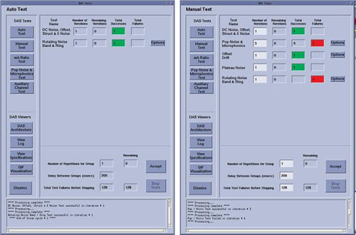

Operating Documentation
Direction 5193574-800, Rev# 22
LightSpeed 7.X Service Methods
Module Version 3.0, Version Date 5/17/10
Operating Documentation |
| Last Revised: | September 29, 2009 |
The Auto Test contains the tests necessary during the manufacturing state of the system. This test may call for multiple iterations of some sub-tests.
The Manual Test contains all the DAS Tools tests, with some flexibility. The operator can choose to enter a number of iterations for a sub-test, and can change some sub-test conditions through an option button menu.
There is no difference in data processing and specification for a sub-test launched from Auto Test of Manual Test. The Manual Test offers more sub-tests and more flexibility for troubleshooting purposes.
Depending on the system configuration and software release, the Auto Test and the list of sub-tests in the Manual Test may differ (i.e.: Rotating Noise Band and Ring test is not available in the VDAS configuration, but is available on later software releases of the HDAS configuration). Below is an example screen shot of an Auto Test/Manual Test start up window.
Illustration 1: Example Auto Test / Manual Test Screens

Failures of these tests will typically only show up in low signal applications, unless the failure is severe.
Noise single. This test looks at the standard deviation by channels of non-offset corrected views.
A failure of this test will show up as a ring artifact
Noise Module Average: This test looks at the average of noise for each 16-module channel.
A failure of this test will show up as a band artifact.
Offset: This test looks at the mean by channel of the non-offset corrected views.
| NOTE: | The next two (2) items may or may not be available depending on system configuration/SW release. |
Structure Noise: This test looks at the difference between noise (rolling median) of four (4) consecutive channels and next four (4) channels.
A failure of this test will show up as a band artifact.
Electronic Noise: This test looks at the median of noise by row.
Microphonic 1s rotation: This test looks at the standard deviation by channels of the non-offset corrected views.
Failure of a microphonic test will result in a ring or band artifact.
Pop Noise 1s rotation: This test looks at the maximum delta between two (2) consecutive views across all views.
Failure of a pop noise test will result in a streak artifact.
Microphonic 0.4s rotation: This test looks at the standard deviation by channels of the non-offset corrected views.
Pop Noise 0.4s rotation: This test looks at the maximum delta between two (2) consecutive views across all views.
Offset Drift: This test looks at the delta between offset vectors of two (2) scans taken 60 seconds apart.
A failure of this test will show up as a ring or band artifact.
| NOTE: | The next item may or may not be available depending on system configuration/SW release. |
Plateau Noise: This test looks at the noise profile of nine (9) consecutive channels (rolling median) folded in quadrature around ISO.
A failure of this test will show up as a band artifact
| NOTE: | Plateau Noise test has been designed as a detector-level test, not a system-level test. Due to the folding of the data around ISO, the correlation of reported failure to physical detector channel is very difficult to achieve. DO NOT use this test for troubleshooting unless specifically directed to by engineering support. |
| NOTE: | The next four (4) items may or may not be available depending on system configuration/SW release. |
Ring 1s: This test looks at the standard deviation by channels of the non-offset corrected views. 1-second rotation speed.
Failure of a ring test will show up as a ring artifact.
Band 1s: This test looks at the average of noise for four (4) consecutive rolling channels. 1-second rotation speed.
Failure of a band test will show up as a band artifact.
Ring 0.4s: This test looks at the standard deviation by channels of the non-offset corrected views. 0.4-second rotation speed.
Band 0.4s: This test looks at the average of noise for four (4) consecutive rolling channels. 0.4-second roation speed.